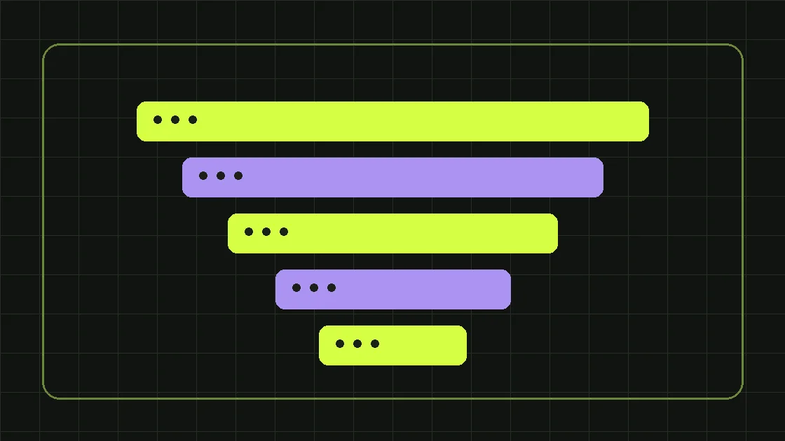

Лидогенерация — это процесс привлечения потенциальных клиентов, которые проявили интерес к продукту и оставили возможность для дальнейшего контакта. Для бизнеса важны не просто заявки, а обращения от людей или организаций, которым продукт действительно подходит. Поэтому результат лидогенерации нужно оценивать не только по цене заполненной формы, но и по качеству разговора, встречам, коммерческим предложениям и продажам.
Что считается лидом и почему определения важны
Лидом могут назвать звонок, заполненную форму, сообщение в мессенджере или заявку на расчёт. Но эти события различаются по намерению покупателя. Человек, который случайно нажал кнопку, и закупщик, запросивший спецификацию, не должны попадать в один показатель эффективности. До запуска кампании договоритесь об определениях: обращение — любой новый контакт; целевое обращение — контакт, соответствующий минимальным условиям; квалифицированный лид — потенциальный покупатель, который подтвердил интерес и критерии сделки. В сложном B2B дополнительно фиксируют профиль компании, роль контактного лица, сроки и примерный объём закупки. Определение должно быть согласовано маркетингом и продажами, иначе один отдел будет отчитываться о росте лидов, а другой — о плохих заявках.
Как выглядит воронка лидогенерации
Упрощённая последовательность выглядит так: показ объявления или появление страницы в поиске → переход → изучение предложения → обращение → квалификация → встреча или расчёт → сделка. На каждом переходе часть аудитории уходит, и это нормально. Нельзя оценивать рекламное объявление без учёта посадочной страницы, а посадочную — отдельно от работы менеджера. Если обращения есть, но менеджеры не перезванивают, проблема может быть не в источнике трафика. Если менеджеры отвечают быстро, но заявки приходят от неподходящих компаний, стоит пересмотреть аудиторию, обещания в объявлениях и форму. Нарисуйте собственную воронку и назначьте для каждого шага метрику, ответственного и источник данных.
Чем лидогенерация отличается от обычной рекламы
Реклама — один из способов привлечения внимания. Лидогенерация охватывает путь от контакта с рекламой или контентом до получения и квалификации обращения. Здесь нужны посадочные страницы, аналитика, система обработки заявок, сообщения и сценарии работы отдела продаж. Например, два рекламных канала могут дать одинаковое число форм, но разное количество подтверждённых встреч. По формальным рекламным показателям они выглядят равными; по полезности для бизнеса — нет. Поэтому услугу лидогенерации разумно оценивать по тому, как настроена вся система получения и обработки спроса. Подробнее о составе работ — на странице лидогенерации Expert Team.
Поисковый спрос: Яндекс.Директ и SEO
Поисковая реклама помогает выйти к аудитории, которая уже формулирует запрос. Это особенно полезно, когда потенциальный клиент знает название продукта, сравнивает поставщиков и готов обсуждать условия. Однако дорогие и конкурентные запросы требуют контроля стоимости клика и качества посадочной страницы. SEO помогает получать переходы по коммерческим и информационным запросам без оплаты каждого клика, но требует времени, полезного контента и технически доступного сайта. Эти инструменты не обязаны конкурировать: платный поиск может быстро проверить формулировку оффера, а органика — постепенно расширять охват устойчивого спроса. При выборе учитывайте объём запросов, конкуренцию, маржинальность продукта и горизонт планирования, а не обещание «дешёвых лидов».
Таргетированная реклама и работа с ещё не сформированным спросом
В социальных сетях часто приходится сначала объяснять, зачем клиенту нужен продукт. Для B2B это может быть кейс с понятной задачей, сравнительная таблица, короткое видео о технологии или полезный чек-лист. Задача объявления — привлечь нужный сегмент, а не максимальное количество любопытных пользователей. Если человек оставляет контакт ради бесплатного материала, это ещё не означает готовность купить. Поэтому отдельно учитывайте лиды с низким и высоким намерением, развивайте их через согласованные коммуникации и сравнивайте качество после работы менеджера. По теме выбора каналов смотрите страницу настройки рекламы.
Сайт, посадочная страница и форма заявки
Даже точное рекламное попадание не спасёт страницу, на которой непонятно, что именно предлагают. Первый экран должен объяснять продукт, целевую аудиторию и следующий шаг. Дальше полезны состав услуги, реальные условия, ограничения, примеры работ, ответы на возражения и доступный способ связи. Для сложных услуг кнопка «Купить» может быть преждевременной: лучше «Получить расчёт» или «Обсудить задачу». Поля формы подбирайте под необходимый первый контакт. Чем больше обязательных полей, тем выше потенциальное трение; но слишком короткая форма может дать много нецелевых обращений. Баланс проверяют на данных. Обязательно предусмотрите понятное согласие на обработку информации и объяснение дальнейшего контакта.
Какие данные собирать перед запуском
Начните с экономики и портрета целевого клиента. Нужны средний чек или диапазон стоимости, валовая маржа, доступный бюджет, география, длительность сделки и причина покупки. Дальше опишите, кого компания считает подходящим лидом: отрасль, размер компании, должность контактного лица, минимальный объём заказа и ограничения доставки или выполнения услуги. Укажите, какие заявки бесполезны для отдела продаж. Соберите вопросы клиентов, причины отказов и реальные формулировки из переписок. Эти материалы пригодятся для ключевых слов, объявлений, страницы и квалификации. Если данных нет, начните с коротких интервью с менеджерами; не подменяйте отсутствие информации выдуманными портретами аудитории.
Расчёт CPL: стоимость лида на условном примере
CPL (cost per lead) — рекламные затраты, разделённые на число лидов по согласованному определению. Например, условная кампания потратила 60 000 ₽ и принесла 120 обращений. CPL равен 500 ₽. Но из этих обращений только 30 соответствуют критериям отдела продаж. Тогда стоимость целевого обращения составляет уже 2 000 ₽. Если из 30 целевых обращений до коммерческого предложения дошли 12, аналитика должна показывать и этот этап. Все цифры здесь учебные, а не результаты Expert Team. При сравнении каналов учитывайте одинаковые периоды, одну методику квалификации и дополнительные затраты, если они существенны: контент, посадочную, колл-центр и инструменты аналитики.
Почему дешёвый лид не обязательно выгоден
Дешёвая заявка может оказаться нецелевой, недоступной по телефону, дублированной или полученной без понимания продукта. Дорогая заявка может привести к крупной сделке, но это не делает любой высокий CPL приемлемым. Лучше анализировать цепочку расходов и результатов. Посчитайте стоимость квалифицированного лида, встречи, предложения и фактической продажи. Затем сравните валовую прибыль по завершённым сделкам с расходами на привлечение, учитывая задержку между обращением и оплатой. В B2B с длительным циклом сделки преждевременно отключать канал через неделю: корректнее смотреть промежуточные показатели качества и постепенно обновлять прогноз по накопленным данным.
Квалификация: как отделить интерес от готовности обсуждать покупку
Проверять заявку можно коротким набором вопросов: какую задачу решает компания, какие условия обязательны, когда планируется решение и кто участвует в выборе поставщика. Не превращайте первый звонок в анкетирование на двадцать минут. Человек должен получить пользу — ответ на вопрос, ориентир стоимости или ясный следующий шаг. Статусы в CRM нужны единые: новая заявка, контакт установлен, целевая, нецелевая, назначена встреча, отправлено предложение, выиграна, проиграна. Для нецелевых обращений сохраняйте причину, например неподходящая география, продукт или бюджет. Именно обратная связь продаж позволяет улучшать рекламную кампанию, а не только отчёт по переходам.
Скорость обработки и контроль потерь
Одна из наиболее частых ошибок — собирать больше заявок, чем компания способна обработать. Часть покупателей быстро сравнивает нескольких поставщиков, поэтому приоритетом становится ясный процесс первого ответа. Назначьте ответственного за новые обращения, рабочие часы, уведомления и резервный сценарий, если менеджер занят. Проверьте, доходят ли формы в CRM, сохраняется ли источник, работают ли уведомления и не теряются ли сообщения из мессенджеров. Раз в неделю сопоставляйте количество обращений в аналитике со сделками и контактами в CRM. Любое расхождение требует разбора: дубли, ошибки целей, спам, удалённые записи или неисправные интеграции.
Как выбирать подрядчика по лидогенерации
Спросите не только о цене лида, но и о методике определения результата. Кто подтверждает качество обращений? Какой период отводится на обратную связь? Какие каналы применяются? Кому принадлежат рекламные кабинеты, домен и статистика? Что произойдёт с данными после окончания договора? Хороший план запуска содержит гипотезы, бюджет, ограничения, критерии приёмки и список действий заказчика. Избегайте обещаний гарантированных продаж без доступа к данным о продукте, марже и работе отдела продаж. Если предлагается покупка контактов или работа с внешними базами, отдельно проверьте происхождение данных и законные основания коммуникации; наличие номера в базе само по себе не означает согласия на рекламный звонок.
Какие ошибки приводят к некачественным лидам
Первая ошибка — обещать в объявлении то, чего нет в продукте: слишком низкую цену, отсутствие обязательных условий или неподтверждённый результат. Вторая — смешивать различные аудитории в одном сообщении. Третья — отправлять весь трафик на общую главную, где клиенту приходится самому искать нужную услугу. Четвёртая — не передавать менеджеру содержание формы и источник обращения. Пятая — измерять кампанию только по кликам, игнорируя качество. Шестая — менять аудиторию, креатив, сайт и бюджет одновременно, после чего невозможно понять причину результата. Исправляйте проблемы последовательно, фиксируйте гипотезу до теста и отделяйте наблюдения от доказанных причин.
План запуска лидогенерации на первые четыре недели
Неделя 1: согласуйте целевой сегмент, продукт, критерии квалификации и экономику. Настройте технический учёт обращений. Неделя 2: подготовьте или обновите посадочную, объявления и материалы для менеджеров; проверьте сценарии отправки формы. Неделя 3: начните ограниченный тест, ежедневно смотрите корректность целей, реальность обращений и скорость обработки. Неделя 4: сопоставьте первые качественные лиды по каналам, найдите точки потерь и сформулируйте следующий набор гипотез. Для сложного B2B четыре недели обычно дают данные о начале воронки, но не всегда позволяют достоверно оценить окупаемость по закрытым сделкам. Решение о масштабировании должно учитывать это ограничение.
Что должно быть в еженедельном отчёте
Достаточно одной страницы с важными метриками и объяснениями. Зафиксируйте расходы по каналам, переходы, обращения, целевые обращения, стоимость целевого лида, скорость первого ответа и количество следующих коммерческих шагов. Добавьте причины потери лидов и список действий на следующую неделю. Отдельно помечайте неполные данные: например, когда CRM ещё не передаёт продажи в аналитику или менеджеры не заполнили причины отказов. Цифры без источника и понятного определения создают ложную точность. Самое полезное в отчёте — не зелёные стрелки, а вывод, что именно стоит оставить, исправить или остановить.
Итог: система важнее количества форм
Лидогенерация приносит пользу бизнесу, когда соединяет подходящую аудиторию, понятный оффер, рабочую посадочную, своевременный ответ менеджера и корректное измерение результата. Начните с определения качественного лида и контроля потерь между рекламой и продажами. Затем тестируйте каналы и сообщения, оценивая не только стоимость обращения, но и реальные коммерческие шаги. Если нужна помощь с такой системой, изучите услугу лидогенерации и подход к настройке рекламных кампаний. Решение о бюджете принимайте после оценки продукта и текущих данных, а не на основании универсальной обещанной стоимости заявки.
Этот материал находится на согласовании и не индексируется поисковиками, пока редактор не подтвердит факты и источники.
Сделаем план под вашу ситуацию
Обсудим задачи бизнеса и бюджет первых тестов.
Получить маркетинговый план ↗